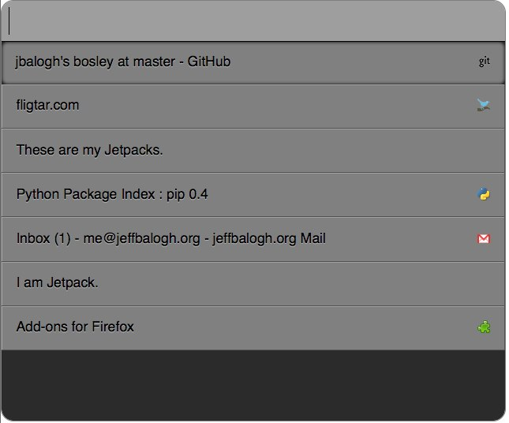

Tab Switcher Jetpack
Inspired by
Search Tab, Ubiquity,
and Emacs, this jetpack feature gives you a
Quicksilver-like keyboard interface for switching tabs. Invoke it with
Control-t to see the switcher pop up.
I know, that sucks on anything not-Mac. What hotkey is good on your
platform?
Use TAB to cycle through the results or just press
ENTER to select the first match.
If you had the same tabs open as me, your switcher would look like this: 
Known bugs:
- Hotkey won't work if document does not have focus.